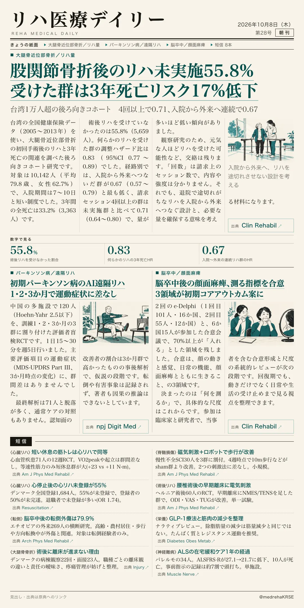
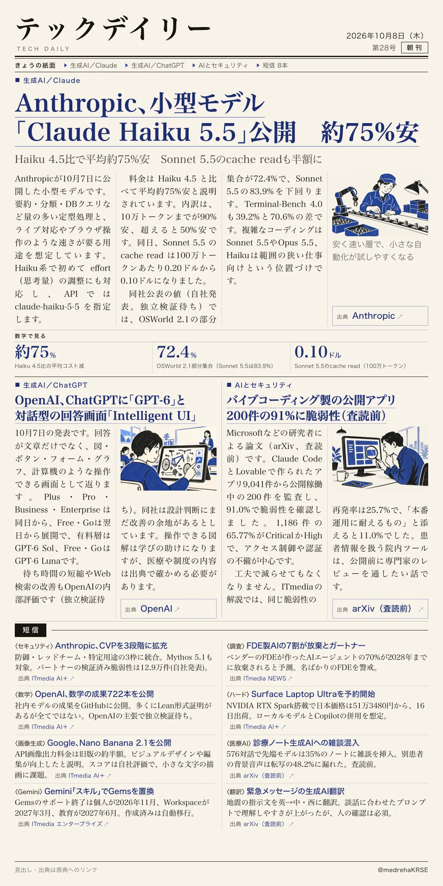

リハ医療デイリー
股関節骨折後のリハ未実施55.8% 受けた群は3年死亡リスク17%低下
台湾1万人超の後ろ向きコホート 4回以上で0.71、入院から外来へ連続で0.67
台湾の全国健康保険データで、大腿骨近位部骨折の手術後リハと3年死亡の関連を調べた後ろ向きコホート研究です。

テックデイリー
Anthropic、小型モデル「Claude Haiku 5.5」公開 約75%安
Haiku 4.5比で平均約75%安 Sonnet 5.5のcache readも半額に
Anthropicが10月7日に公開した小型モデルで、量の多い定型処理と速さが要る用途向けです。
